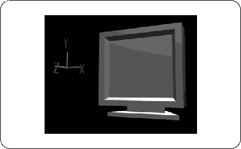

Return to previous page | Return to menu | Go to next page
The flow of color painting is roughly
It consists of three tasks.
Now let's add color to this TV. The TV after modeling has no color.
[Polygon] → [Current Material]
please choose. If there is any color, the place where the color is currently colored will be pink highlight, but now it is not colored, so at the bottom of the screen,
"Warning:*Selected model has no material."
Should be displayed.
Even at this stage, if you change from “WIRE” to “SHADE” on the Perspective screen, the color (silver) is attached, but this is only visible so that it already exists. Don't feel wrong if you have one (Figure 4-2).
